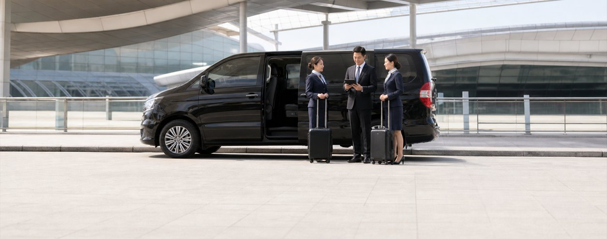
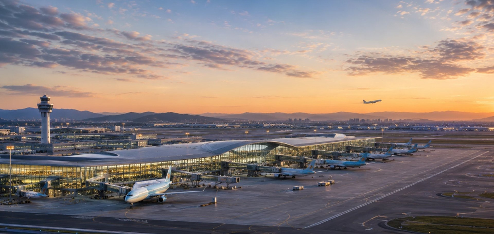

운항 스케줄 기반
운항 시각과 교대 일정을 기준으로 픽업 시간을 역산해 배차합니다. 스케줄이 바뀌면 이동 계획도 함께 다시 계산됩니다.
승무원이 제 시간에 공항에 닿지 못하면 운항 일정 전체가 흔들립니다. 위즈모빌리티는 운항 스케줄과 교대 조건을 기준으로 이동을 구성하고, 변동이 생기면 즉시 재배차합니다.
운항 시각과 교대 일정을 기준으로 픽업 시간을 역산해 배차합니다. 스케줄이 바뀌면 이동 계획도 함께 다시 계산됩니다.
승무원 그룹 단위로 공항과 체류 숙소를 잇는 이동을 반복 운영합니다.

지연 · 결항 · 회항이 발생하면 알림과 함께 일정을 다시 짭니다.
운항 정보 확인부터 이동 수행, 결과 리포트까지 승무원 운영에 필요한 업무를 한 팀이 맡습니다.
운항 스케줄과 교대 계획을 기준으로 이동 일정을 구성합니다.
공항과 체류 숙소를 잇는 승무원 그룹 이동을 운영합니다.
체류 숙소를 연계해 도착부터 다음 운항까지 이어갑니다.
지연 · 결항 · 회항 발생 시 알림과 재배차로 대응합니다.
차량 위치와 이동 현황을 실시간으로 확인합니다.
운행 이력과 운영 데이터를 정리해 리포트로 제공합니다.
항공 운영에서 일정 변경은 상시로 일어납니다. 위즈모빌리티는 변경을 전제로 이동 계획을 세우고, 발생 즉시 다시 배차합니다.
도착 예정 시각 변동을 반영해 픽업 시간을 다시 계산합니다.
숙소 연장과 대체 이동을 함께 조정해 공백을 만들지 않습니다.
24시간 배차 체계로 심야 시간대 이동을 동일한 기준으로 운영합니다.
교대 인원과 구간이 바뀌어도 하나의 운영 건으로 이어서 관리합니다.
· 변경이 발생하면 담당자에게 실시간 알림을 보내고, 재배차 결과를 함께 공유합니다.
예약 접수부터 배차, 이동 완료까지 진행 상태를 실시간으로 공유합니다.
진행 중인 이동과 대기 건을 한 화면에서 확인합니다.
차량 · 기사 · 연락처와 배차 상태를 통합 관리합니다.
승무원에게 이동 정보를 링크로 바로 전달합니다.

위즈모빌리티는 단순 이동을 넘어 항공사 운영을 지원하는 전문 운영 파트너입니다.
운영 업무 부담이 줄고
운영 프로세스가 표준화됩니다.
예외 상황에 즉시 대응해
안정적인 운항을 지원합니다.
실시간 현황을 확인하고
데이터를 근거로 관리합니다.
일관된 운영 기준을 적용해
승무원 만족도를 높입니다.